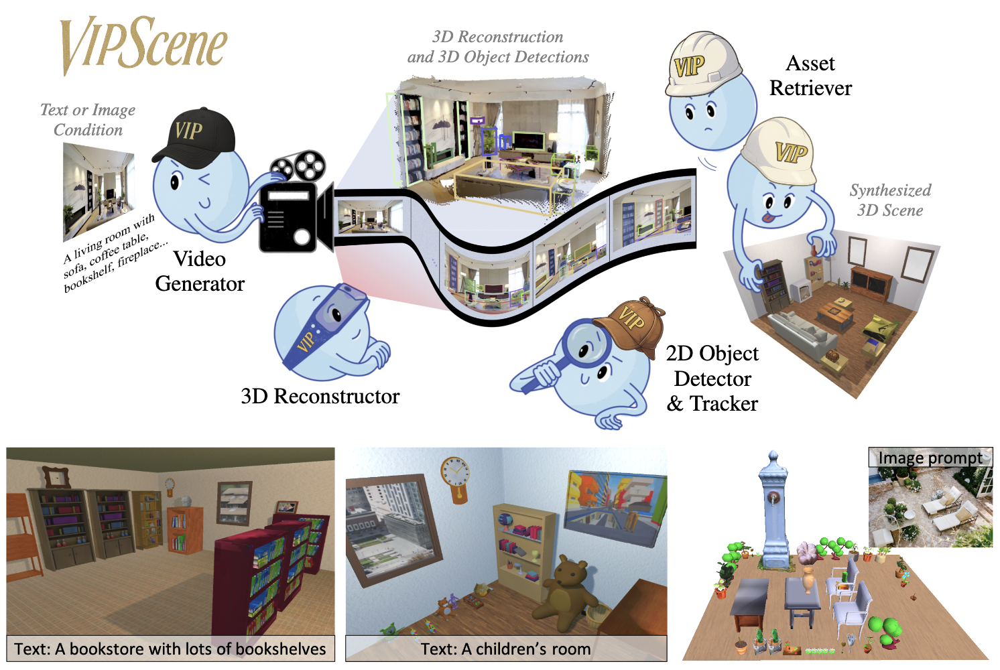

3D scene synthesis traditionally demands expert knowledge and manual effort. Automating this process could greatly benefit fields such as architectural design, robotics simulation, VR, and gaming. Recent approaches to 3D scene synthesis often rely on the commonsense reasoning of large language models (LLMs) or strong visual priors of modern image generation models. However, current LLMs demonstrate limited 3D spatial reasoning ability, which restricts their ability to generate realistic and coherent 3D scenes. Meanwhile, image generation-based methods often suffer from constraints in viewpoint selection and multi-view inconsistencies. In this work, we present Video Perception Models for 3D Scene synthesis (VIPScene), a novel framework that exploits the encoded commonsense knowledge of 3D physical world in video generation models to ensure coherent scene layouts and consistent object placements across views. VIPScene accepts both text and image prompts and seamlessly integrates video generation, feedforward 3D reconstruction, and open-vocabulary perception models to semantically and geometrically analyze each object in a scene. This enables flexible scene synthesis with high realism and structural consistency.
From the generated video, we reconstruct the 3D scene and extract individual objects. The final scene is synthesized by replacing detected objects with high-quality 3D assets from an object database.
For more precise analysis, we introduce First-Person View Score (FPVScore), which, instead of relying on a single top-down view, utilizes a continuous first-person perspective to capitalize on the reasoning ability of multimodal large language models for coherence and plausibility evaluation.
Exemplary output of GPT-4o of a top-down view (left) and a first-person view (right). Top-down views frequently obscure key object details, hindering semantic understanding and impairing layout evaluation.
Given an input image, VIPScene generates a video and reconstructs a full 3D scene. Note that based on the information from the first frame, the generated video can plausibly hallucinate objects beyond the original field of view, such as the white sofa near the observer in the living room or the side window in the bedroom.
Additional detailed comparison of scene layouts. Unlike Holodeck, which handles object placement and window layout separately, our method jointly reasons about their spatial relationships, avoiding window occlusions and yielding more coherent, realistic arrangements.
The image defines the initial view, while text enables plausible extrapolation, enhancing flexibility and realism.